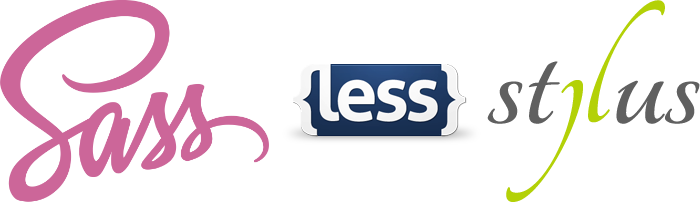

Темизаия Drupal 8
Препроцессоры

Зачем?
1. Организация кода
2. Переменные
3. Примеси
4. Nesting
5.
Как работает postCSS
Парсер
Плагины
Генератор
Что же выбрать?
Дайте два!
Как скомпилировать
Gulp + Sass + postCSS
NPM